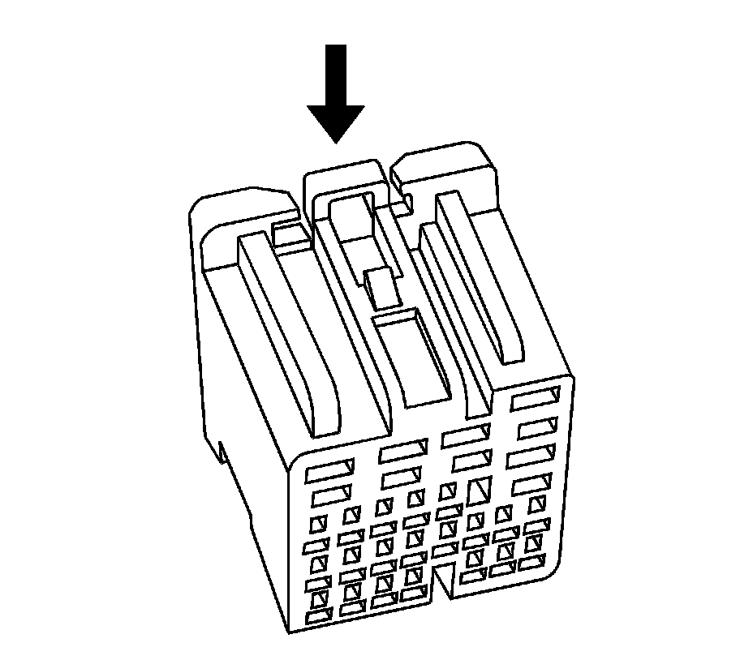
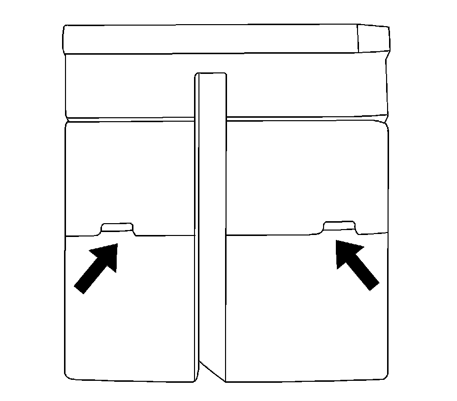
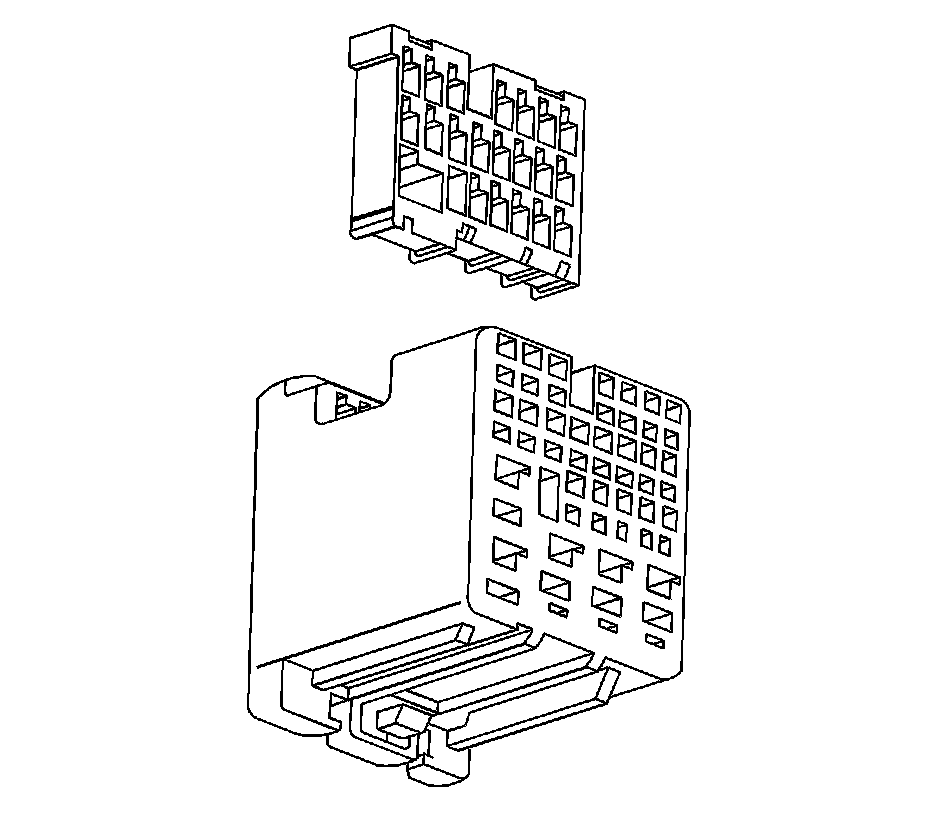
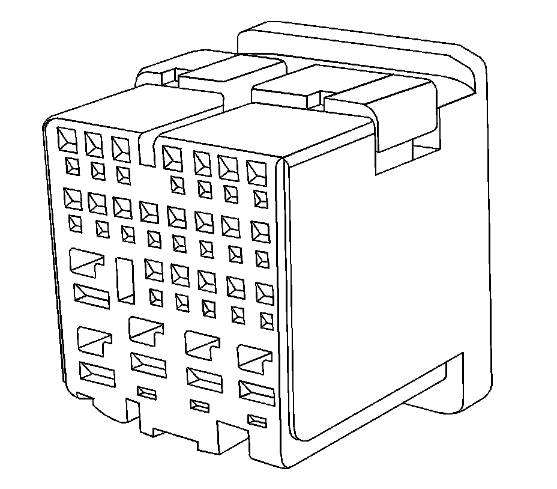
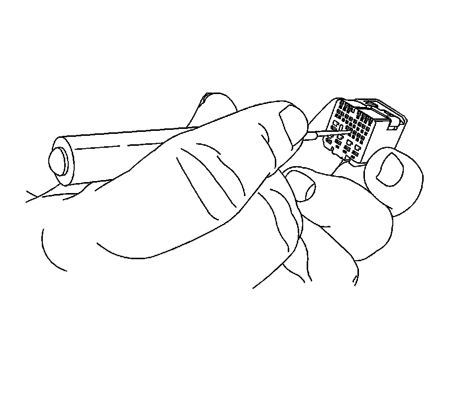

JST Connectors
JST CONNECTORS
TOOLS REQUIRED
J-38125 Terminal Repair Kit
REMOVAL PROCEDURE
1. While depressing the lock, remove the connector from the component.

2. Locate the two indents of the terminal position assurance (TPA) located on the bottom of the connector body.


3. Use a small flat-blade tool to very carefully raise the TPA on both sides of the connector.

IMPORTANT: The TPA cannot be removed from the connector while there are terminals present in the connector body.
View of the TPA when removed from the connector body.
4. Use the J 38125-12A tool to release the terminals by inserting the tool into the left side of the terminal release cavity as shown in the graphic. Use the tool to move the terminal release to the right with a gentle prying motion. See the release tool cross reference in the Reference Guide of the J-38125 to ensure that the correct release tool is used.

5. While holding the removal tool in place, gently pull the wire out of the back of the connector. Always remember never use force when pulling a terminal out of a connector.
REPAIR PROCEDURE
Use the appropriate terminal and follow the instructions in the J-38125.
Location of the terminal in the repair tray and the proper crimp tool can be found in the appropriate connector end view.